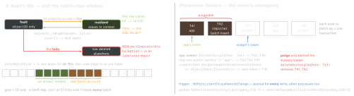

ios-platform · folio
In one line: Fetched objects are faults, filled on first touch from the row cache or a SQL
SELECT — performance = few round-trips. Batch requests run as SQL on the store:
fast, but no context sees them until you merge the returned IDs. Persistent
history logs every transaction (who, what) in the store, so each context, process and
extension catches up from its own token.
Download PDF Print view LaTeX source


Fetch knobs
| Knob (default) | Effect · use |
|---|---|
returnsObjectsAsFaults (true) | false: filled now; relationships still faults |
includesPropertyValues (true) | false: IDs only, no row cache — deletes |
fetchBatchSize (0 = all) | IDs first, rows in pages — long lists, FRC |
relationshipKeyPathsForPrefetching | one query per key path, not a fault per object: kills N+1 |
propertiesToFetch +.dictionaryResultType | read-only dicts, no objects; + NSExpressionDescription = SUM/AVG in SQL |
count(for:) · fetchLimit | SELECT COUNT · LIMIT |
A fetch always runs SQL; its faults then fire from the row cache it filled. Big import: save + reset() every N rows.
Batch requests — SQL on the store (SQLite only)
| Request | iOS | Notes · result type for IDs |
|---|---|---|
NSBatchUpdateRequest | 8 | propertiesToUpdate = one UPDATE.updatedObjectIDsResultType |
NSBatchDeleteRequest | 9 | basic delete rules; Deny unsupported.resultTypeObjectIDs |
NSBatchInsertRequest | 13 | dicts or a handler; unique constraints checked; no relationships(unverified) · .objectIDs |
All skip the context: no validation, no willSave, no notifications; objects in memory go stale. Merge the IDs: class method mergeChanges(fromRemoteContextSave:into:) — or let history do it.
Example — FRC + diffable, and a batch delete the UI sees
let r = NSFetchRequest<Item>(entityName: "Item")
r.sortDescriptors = [NSSortDescriptor(key: "date", ascending: false)]
r.fetchBatchSize = 30
frc = NSFetchedResultsController(fetchRequest: r, managedObjectContext:
viewContext, sectionNameKeyPath: nil, cacheName: nil)
frc.delegate = self; try frc.performFetch()
func controller(_ c: NSFetchedResultsController<NSFetchRequestResult>,
didChangeContentWith s: NSDiffableDataSourceSnapshotReference) {
dataSource.apply(s as NSDiffableDataSourceSnapshot<String, NSManagedObjectID>)
}
// inside bg.perform: 50k rows gone in one DELETE, then tell viewContext
let del = NSBatchDeleteRequest(fetchRequest: NSFetchRequest(entityName: "Item"))
del.resultType = .resultTypeObjectIDs
let res = try bg.execute(del) as? NSBatchDeleteResult
let ids = res?.result as? [NSManagedObjectID] ?? []
NSManagedObjectContext.mergeChanges(fromRemoteContextSave:
[NSDeletedObjectsKey: ids], into: [viewContext]) // FRC animates itNSFetchedResultsController
- Watches one context for one fetch request (≥ 1 sort descriptor;
sectionNameKeyPathfollows the first sort key). It moves only when a change lands in that context — a save there or a merge. - iOS 13
controller(_:didChangeContentWith:): a snapshot ofNSManagedObjectIDs (sections =String); implement it and the per-row callbacks stop. ACollectionDifferencevariant exists too. - An in-place edit keeps the same ID, so the diff sees nothing:
reconfigureItems(iOS 15) the updated IDs, or let cells observe their object.
Persistent history
- Each
NSPersistentHistoryTransaction:token,timestamp,author,contextName,changes(object ID, insert/update/delete,updatedProperties). Name writers:ctx.transactionAuthor = "importer". - Read on a background context with
NSPersistentHistoryChangeRequest.fetchHistory(after:); persist the last token (NSSecureCoding) per reader. - Purge with
deleteHistory(before:)a token, date or transaction. Once tracked, opening the store without the key makes it read-only.
App + extension on one store
Store URL in the App Group container; both targets set both keys on the store description before loadPersistentStores. Each process has its own coordinator, so automaticallyMergesChangesFromParent never sees the other — each reader keeps its own token in the group and merges foreign authors.
Debug — launch arguments
-com.apple.CoreData.SQLDebug 1 (up to 4): every SQL statement + time — N+1 shows as a SELECT per row. …ConcurrencyDebug 1: crash on wrong-queue access. …MigrationDebug 1: migration steps.
Traps
- FRC stale after an import: the change never reached its context (no merge, a batch request, another process).
- Batch delete, UI still shows the rows — nobody merged the IDs.
- Purging on a timer before the widget read it: it silently misses changes.
- Reading
objectIDorisFaultdoes not fire a fault.